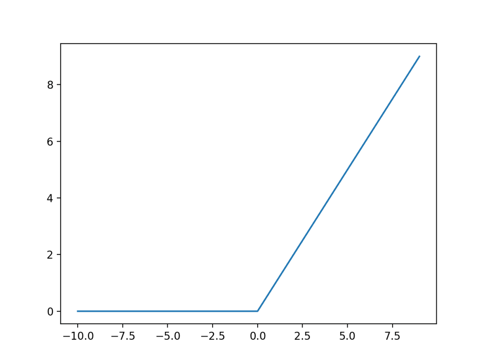
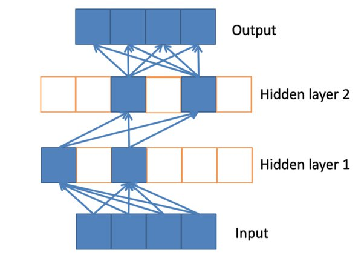

۲. چالش دانیلا با تابع ReLU!
دانیلا میدونه که اگر تابع فعالسازی (activation function) بعضی از لایه های مدلش رو به ReLU تغییر بده، میتونه باعث بهبود مدلش بشه. متاسفانه تیمی که دانیلا داخلش کار میکنه در برابر تغییرات مقاومت نشون میدن! بنابراین بهترین کاری که میتونه انجام بده اینه که یه لیستی از مزایای تابع ReLU آماده کنه و به تیم ارائه بده تا نظرشون رو تغییر بده. اون یه پیشنویسی رو از قبل آماده کرده و نمیدونه کدومش بهتره و نیاز به کمک شما داره!
کدوم یکی از عبارت های زیر مزایای تابع ReLU رو نشون میده؟
- تابع ReLU در اطراف مقادیر حدی (اکستریم) اشباع میشه که به عملیات پسانتشار (backpropagation) اجازه میده سریعتر همگرا بشه و به یادگیری شبکه کمک میکنه.
- تابع ReLU نمایش پراکندگی (representational sparsity) بهتری نسبت به توابع فعالسازی sigmoid و tanh داره چون خروجی تابع برای مقادیر کوچکتر یا مساوی صفر دقیقا صفره.
- تابع ReLU پیاده سازی سادهای داره
- زمانی که شبکه های عصبی تا جای ممکن رفتار خطی داشته باشند، سادهتر میتونن خودشون رو بهینه (optimize) کنند. تابع ReLU که عمدتا به صورت یک تابع خطی عمل میکنه میتونه در بهینه کردن شبکه های عصبی به ما کمک کنه.
پاسخ کوتاه : گزینه ۲ و ۳ و ۴
پاسخ بلند : اول بیاید یه یادآوری از تابع ReLU داشته باشیم. اگر ورودی این تابع مقداری کمتر از ۰ (صفر) باشه خروجی تابع ۰ (صفر) میشه و در غیر این صورت همون مقداری که به عنوان ورودی گرفته رو به خروجی انتقال میده :

بیاید گزینه اول رو بررسی کنیم. ابتدا میخوام اصطلاحاتی که در این گزینه وجود داره رو تعریف کنم.
مقادیر اکستریم : به زبون آدمیزاد یعنی کوچکترین و بزرگترین مقدار تابع! برای ReLU کوچکترین مقدار صفره و بزرگترین مقدار نداره! یعنی کران بالا نداره! برای تابع sigmoid کوچکترین و بزرگترین مقدار ۰ و ۱ است. برای tanh کوچکترین و بزرگترین مقدار ۱- و ۱ است.
اشباع شدن : وقتی میگیم خروجی یه تابع اشباع (saturate) میشه به زبون آدمیزاد یعنی منحنی تابع موازی محور x ها میشه! مثلا منحنی تابع sigmoid رو در نظر بگیرید :

اگر ورودی تابع یه عدد منفی یا مثبت بزرگ باشه، خروجی تابع sigmoid اشباع (saturate) میشه! اما تابع ReLU برای مقادیر منفی اشتباع میشه ولی برای مقادیر مثبت اشباع نمیشه. چون کران بالا نداره. یعنی هیچ وقت منحنی تابع ReLU برای مقادیر مثبت موازی محور x ها نمیشه!
پس چی شد؟ گزینه اول داره میگه تابع ReLU در اطراف مقادیر حدی (اکستریم) اشباع میشه که غلطه! فقط برای مقادیر منفی اشباع میشه! همین کافیه که این گزینه رو رد کنیم ولی بیاید ادامه رو هم بررسی کنیم. در ادامه میگه این قضیه باعث میشه عملیات پسانتشار سریعتر همگرا بشه! داستان دقیقا برعکسه! Saturation برای شبکه های عصبی یه قضیه مشکل سازه! باعث مشکلاتی نظیر محوشدگی گرادیان (Vanishing Gradient) و Dying ReLU میشه!
مشکل محوشدگی گرادیان چیه؟ این لینک خیلی خوب توضیح داده که به صورت خلاصه میشه :
چرا مشکل محوشدگی گرادیان (Vanishing Gradient) اتفاق میافتد؟
برخی توابع فعالساز، مانند تابع سیگموید (Sigmoid)، مقادیر ورودی با مقیاس بزرگ را در یک بازهی کوچک میان صفر و 1 قرار میدهند؛ بنابراین زمانیکه یک تغییر بسیار بزرگ در مقدار ورودی تابع اتفاق میافتد، خروجی تابع تنها مقدار کمی تغییر میکند؛ این یعنی مقدار مشتق آن خیلی کوچک میشود.
برای مثال، در شکل بالا تابع سیگموید را بههمراه مشتق آن مشاهده میکنیم. همانطور که میبینیم زمانیکه مقدار ورودی تابع بزرگ یا کوچک میشود، مقدار مشتق آن به صفر نزدیک میشود.

پس گزینه اول کلا غلطه! حالا بریم سراغ گزینه دوم. داره در مورد مفهومی به نامrepresentational sparsity صحبت میکنه. خب این یعنی چی؟ یکی از مزایای تابع ReLU اینه که خروجیش برای مقادیر منفی دقیقا صفره. در صورتی که sigmoid و tanh در فرآیند learing تقریبی از صفر رو نمایش میدن. یعنی خروجیشون خیلی نزدیک به صفره ولی واقعا صفر نیست!
بنابراین زمانی که از تابع ReLU در لایه های میانی (hidden layer) استفاده میکنیم باعث میشه بعضی از نورون ها مقدارشون صفر بشه! یعنی یه چیزی مثل تصویر زیر میشه :

در واقع برخی از نورون ها غیر فعال میشن چون وزنشون صفره! این باعث میشه مدل سادهتری داشته باشیم و هزینه محاسباتی هم کمتر بشه و احتمال overfitting هم کمتر بشه! اگر بخوام به زبان کوچه بازاری بگم، اینکه همه نورون ها در فرآیند learning همکاری داشته باشن میدونید مثل چی میمونه؟ مثل شخصی میمونه که همه کاره و هیچ کاره است! کسی که از هر کاری یه ذره بلده (دریایی به عمق یک سانتیمتر) بهتره یا کسی که توی یه کار تخصص داره؟ در مورد نورون ها هم همینه. اصلا یه تکنیکی در شبکه های عصبی وجود داره به نام Dropout که ما عامدانه یکسری نورون ها رو به صورت رندوم حذف میکنیم! در واقع ReLU یه جور Dropout طبیعی داره.
اما این قضیه در تابع ReLU یک شمشیر دو لبه است. یعنی میتونه باعث مشکل dying ReLU (این مقاله رو هم در موردش بخونید) بشه. یه دفعه میبینی فرار مغز ها زیاد شد و کلا ۴ تا نورون نخاله توی شبکه موندن و شبکه به فاک رفت! خب این راه حل داره. میتونیم learning rate رو کوچیکتر در نظر بگیریم که یه دفعه یه وزن منفی بزرگ نداشته باشیم که کلی از نورون ها صفر بشن یا میتونیم از تابع Leaky ReLU استفاده کنیم. پس گزینه دوم با اینکه کلی اما و اگر داشت ولی درسته!
گزینه سوم هم درسته. چون پیاده سازی ReLU بر خلاف sigmoid و tanh که هزینه محاسباتی (به توان رسوندن) بیشتری دارند، خیلی ساده تره.
در مورد گزینه چهارم، اول توضیحات زیر رو از این لینک بخونید :
اگر از توابع فعالساز (Activation Functions) استفاده نکنیم، وزنها و مقدار بایاس فقط یک معادلهی خطی را ایجاد میکنند. درست است که معادلهی خطی خیلی راحتتر حلشدنی است، اما برای حل مسائل پیچیده نمیتواند کمکی به ما کند؛ درواقع معادلات خطی در یادگیری الگوهای پیچیدهی دادهی خیلی محدود هستند و یک شبکهی عصبی بدون تابع فعالساز فقط یک مدل رگرسیون خطی (Linear Regression Model) است. بهطور کلی، شبکههای عصبی از توابع فعالساز استفاده میکنند تا بتوانند به شبکه در یادگیری دادههای پیچیده کمک و پیشبینی قابلقبولی را در خروجی ارائه کنند.
پس اگر توابع ما خطی باشند شبکه عصبی خیلی سادهتر میتونه optimize بشه ولی این به این معنی نیست که میتونه یک مدل خوبی هم بسازه! اما نکته اینه که تابع ReLU یک تابع خطی نیست! در واقع یک تابع تکهای خطی (piecewise linear function) محسوب میشه که تعریف به زبان خیلی ساده میشه :
تابعی پیوسته بر [a,b] که نمودار آن از تعدادی متناهی قطعهخط تشکیل شده است
https://lamtakam.com/dictionaries/farhangestan/8561/%D8%AA%D8%A7%D8%A8%D8%B9+%D8%AA%DA%A9%D9%87+%D8%A7%DB%8C+%D8%AE%D8%B7%DB%8C
خب این باعث میشه ReLU ویژگی های مدل های خطی رو داشته باشه و در عین حال خطی نباشه. توصیه میکنم حتما ویدئو زیر رو ببینید که زندگیتون رو در زمینه درک توابع فعالسازی متحول میکنه!
پس در نتیجه گزینه های ۲ و ۳ و ۴ صحیح هستند!
nb.neighbours()
| title | date | |
|---|---|---|
| prev | ۱. هاتداگ؛ هست یا نیست؟ | ۱۴۰۱/۱۰ |
| next | دادهکاوی کلوچهمحور! | ۱۴۰۱/۱۱ |